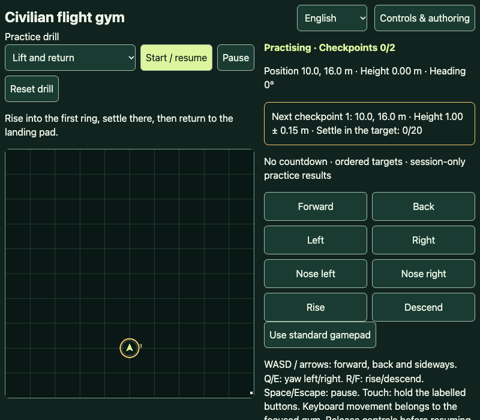

No unlocks, payment, or installation is needed to play online. Practice does not grant campaign wins. Choose an app in Flight practice, then select Play. It opens the published app in a new tab without arming a flight.
A host may still require its site password before opening an app or guide. Use the access provided by the site owner; do not include the password in screenshots or support reports.
Use Settings → Controls and the app’s current Flight guide. Gym supports keyboard, touch buttons, and standard gamepad. In FPV apps select Keyboard, Touch · Mode 2, Controller / Steam Deck, or USB radio. A standard controller uses its own input option, not radio calibration. Connect it, select that option, centre the sticks and release its buttons before arming. For a USB radio, open Settings → Controls → Radio setup and complete the guided calibration and direction checks first. Use the app’s live control display and current guide for bindings; supported browser/device combinations can differ.
For keyboard, focus the flight view before using the displayed keys. For touch, select Touch · Mode 2 and use the visible sticks; releasing a stick is not a pause command. Pause explicitly before changing setup. After focus loss or a disconnected device, return to the app and follow its resume prompt; do not expect a flight to restart automatically.
In either FPV app, open Settings → Accessibility → Flight guidance. Set Guidance to Detailed for numeric objective readings; Text size and HUD contrast are separate choices. These preferences survive reload. They do not start a flight or hold the aircraft steady.
Gym: use Start for the selected drill, or Select Mission to choose Lift and return. Use the in-flight Pause menu to Resume or Restart. Flight Studio: start with Lift and land, open Flight guide, and Watch example. World Studio: choose Watch first flight, then Try first flight, or open Flight School for its guided lessons. Follow the selected lesson’s flight mode; self-level is also available for assisted leveling. Both FPV modes use manual throttle and neither holds altitude or position. Acro does not automatically level when sticks return to centre. Arm / resume is always your explicit action. Follow the objective on screen, pause before changing setup, and use Reset / Retry for another attempt. Back to lobby returns to World Studio’s selection.

Choose Download for offline use on the launcher. You can also use the app’s Prepare offline action (Settings → Content & Offline in Gym and World Studio; Settings → Help & Extras → Flight guide → Workshop & offline in Flight Studio). Leave the tab open. The download shows progress and Cancel; files are checked before the version is recorded. Thirty seconds without download activity or five minutes overall ends the attempt. A cancelled or failed new download leaves the previous prepared version intact.
Return to the stable launcher from the directory. Ready offline means the exact owning worker and every pinned dependency passed verification. Close all tabs, disable networking, and reopen that stable launcher in the same browser profile to check on your device. Bookmark the launcher address before going offline. A saved version name alone is not proof of readiness. Package guides and previews are included in the offline copy.
This is separate from downloading files. Use Add to home screen when the launcher offers it. Otherwise use the browser’s Install app menu; on iPhone/iPad use Share → Add to Home Screen. Availability depends on browser and platform. Open the new app icon once while online, check or prepare its offline copy there, then close and reopen it with networking disabled. Browser tabs, profiles and installed-app windows can have separate storage: readiness in one is not proof for another. An icon alone is not an offline guarantee. Online play works without either step.
The launcher announces Update available without reloading a flight. Open the new version when you are ready and prepare it offline. The previous prepared version remains linked for rollback. Updates to the launcher itself may need its tabs closed. Remove offline deletes only that version’s app-shell cache and worker, not flight records, radio profiles, or imported worlds. Use Remove this offline copy (keep records) on the launcher; use browser site settings only if you intend to remove all site data. Removing a home-screen icon or uninstalling a browser app is a different operation; read any option to delete site data before confirming.
Export recordings, notebooks, playlists, and authored worlds with each app’s current export tools before clearing browser storage. Export is not automatic backup. Imported .rlpack files add content inside World Studio: they are not executable apps and cannot be installed in this directory.
Browser eviction can remove records and imported worlds, not only cached files. This differs from the launcher’s scoped removal. Keep exported backups outside browser storage. If records are missing after eviction, reconnect, prepare the app again, then restore your exported backups with its import tools. Downloading the app does not recover lost records; without an export, they may be unrecoverable.
Radio calibration and the tuning library are separate backups. In the FPV apps, keep Radio setup’s Export profiles file for calibration. For rates, throttle and saved drone setups, open Settings → Controls → Radio setup → Rates & throttle → Import / export · Betaflight and backups, choose Backup complete library, then Download file. Save the downloaded JSON outside browser storage. Export SIM rates and a rate-only CLI export are not complete-library backups. To restore, open the same section, use Upload text / JSON to load your library JSON, wait until its text appears, then choose Restore library backup. Restore library backup replaces the saved library: first back up any current settings you want to keep. Importing radio calibration does not restore the tuning library. Restored settings apply to a new flight, not an already running attempt.
Для гри онлайн не потрібні розблокування, оплата чи встановлення. Практика не дає перемог у кампанії. Виберіть застосунок у каталозі та натисніть Грати: він відкриється в новій вкладці без автоматичного запуску польоту.
Сайт може вимагати пароль перед відкриттям застосунку чи посібника. Скористайтеся доступом, наданим власником сайту; не додавайте пароль до знімків екрана чи звернень у підтримку.
Відкрийте «Налаштування → Керування» й чинний довідник польоту в застосунку. Тренажер підтримує клавіатуру, сенсорні кнопки та стандартний геймпад. У FPV виберіть клавіатуру, сенсорний режим Mode 2, «Контролер / Steam Deck» або USB-пульт. Для стандартного контролера є окремий режим, калібрування пульта для нього не потрібне. Під’єднайте контролер, виберіть цей режим, відпустіть стіки та кнопки перед запуском. Для USB-пульта спочатку відкрийте «Налаштування → Керування → Налаштувати пульт» та пройдіть калібрування й перевірку напрямків. Актуальні прив’язки дивіться на схемі керування й у вбудованому посібнику; підтримка залежить від браузера та пристрою.
Для клавіатури спочатку переведіть фокус у вікно польоту. Для дотику виберіть Mode 2 та користуйтеся видимими стіками: відпускання стіка не ставить політ на паузу. Перед зміною налаштувань явно натисніть паузу. Після втрати фокусу чи від’єднання пристрою поверніться до застосунку й виконайте підказку продовження; політ не відновлюється автоматично.
В обох застосунках FPV відкрийте «Налаштування → Доступність → Підказки польоту». Виберіть «Підказки → Докладні», щоб бачити числові показники цілі. «Розмір тексту» й «Контраст приладів» налаштовуються окремо. Вибір зберігається після перезавантаження; він не запускає політ і не стабілізує апарат.
У тренажері натисніть «Почати» для вибраної вправи або «Вибрати місію» для підйому й повернення. У меню паузи є «Продовжити» й «Заново». У Flight Studio відкрийте посібник і приклад першого зльоту та посадки. У World Studio виберіть перегляд першого польоту, потім спробуйте його або відкрийте школу польотів із підказками. Дотримуйтеся режиму вибраного уроку; для допомоги з вирівнюванням також є самовирівнювання. Обидва режими FPV мають ручний газ і не утримують висоту чи позицію. В Acro нейтральні стіки не вирівнюють апарат. Запуск / продовження завжди потребує вашої дії. Виконуйте мету на екрані, призупиніть перед зміною налаштувань, а для нової спроби виберіть Скинути / Повторити. Повернення до лобі відкриває вибір польотів.
На сторінці запуску виберіть «Завантажити для роботи офлайн». Також можна скористатися підготовкою офлайн у застосунку: «Налаштування → Вміст і офлайн» у тренажері та World Studio; «Налаштування → Довідка й додаткове → Довідник польоту → Майстерня й автономний запуск» у Flight Studio. Не закривайте вкладку: показано поступ і скасування, а файли перевіряються. Спроба припиняється після 30 секунд без даних або п’яти хвилин загалом. Скасування чи помилка нової версії не видаляє попередню підготовлену.
Поверніться до стабільної сторінки запуску через каталог. Готово офлайн означає, що перевірено воркер-власник і всі потрібні файли. Перед вимкненням мережі додайте сторінку запуску до закладок. Закрийте всі вкладки, вимкніть мережу та знову відкрийте її в тому самому профілі браузера. Сам запис назви версії не доводить готовності. Посібник і знімок входять до офлайн-копії.
Це окрема дія від завантаження файлів. Використайте кнопку встановлення, якщо вона доступна, або меню браузера. На iPhone/iPad: Поділитися → На початковий екран. Підтримка залежить від браузера. Відкрийте нову піктограму один раз онлайн, перевірте або підготуйте офлайн-копію саме там, потім закрийте й відкрийте її без мережі. Вкладки, профілі та вікна встановлених застосунків можуть мати окремі сховища: готовність в одному не доводить готовності в іншому. Сама піктограма не гарантує роботи офлайн. Онлайн можна грати без установлення.
Сторінка запуску повідомить про оновлення, але не перезавантажить політ. Відкрийте нову версію та підготуйте її офлайн, коли будете готові. Попередня залишається для повернення. Оновлення самої сторінки запуску інколи потребує закриття її вкладок. Видалення офлайн-копії прибирає лише оболонку цієї версії, не записи, профілі пульта чи імпортовані світи. Скористайтеся кнопкою видалення офлайн-копії зі збереженням записів на сторінці запуску; очищайте дані сайту лише якщо справді хочете видалити все. Видалення піктограми чи встановленого вебзастосунку — окрема дія: перед підтвердженням перевірте, чи пропонується також видалити дані сайту.
Перед очищенням сховища експортуйте записи, нотатники, списки та авторські світи засобами застосунків. Автоматичної резервної копії немає. Файли .rlpack додають контент усередині World Studio, а не виконувані застосунки каталогу.
Калібрування пульта й бібліотека налаштувань потребують окремих резервних копій. У FPV-застосунках збережіть файл Експорт профілів з налаштування пульта для калібрування. Для рейтів, газу й збережених конфігурацій дрона відкрийте Налаштування → Керування → Налаштувати пульт → Рейти й газ → Імпорт / експорт · Betaflight і резервні копії, натисніть Резервна копія всієї бібліотеки, потім Завантажити файл. Збережіть JSON поза сховищем браузера. Експорт окремих рейтів SIM або CLI лише з рейтами не замінює повну копію бібліотеки. Для відновлення в тому самому розділі виберіть свій JSON через Завантажити текст / JSON, дочекайтеся появи тексту й натисніть Відновити бібліотеку. Відновити бібліотеку замінює збережену бібліотеку: спочатку зробіть копію поточних налаштувань, які хочете зберегти. Імпорт калібрування пульта не відновлює бібліотеку налаштувань. Відновлені налаштування діють у новому польоті, а не в уже запущеній спробі.